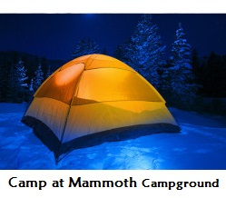
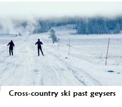
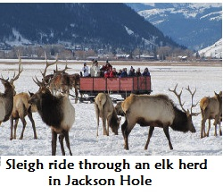
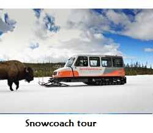
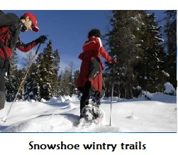
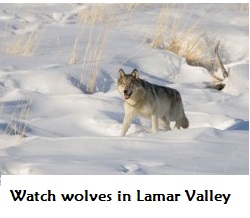

The park’s lowest-elevation campground at 6,200 feet, Mammoth is the only one open year-round. Sites for tents and RVs up to 75 feet are available (no hookups). The campground is located near the North Entrance and the year-round facilities at Mammoth Hot Springs.

This is a fantastic place to glide through a quiet landscape on skinny skis. Trails range from easy groomed tracks to wild backcountry routes, and concessionaires run guided trips and rent equipment. Two popular trips: the Biscuit Basin Trail, which snakes through Old Faithful geyser basin, and Blacktail Plateau Trail, a challenging route on the summer Blacktail Plateau Drive.

Up to 7,000 elk spend their winter in the National Elk Refuge, a 24,700-acre sanctuary between the town of Jackson, Wyoming and Grand Teton National Park. And when snow blankets the ground from mid-December to early April, you can see them up close from the safety of a horse-drawn sleigh.

With most park roads closed in the winter, the best way to see the sights (and stay warm while doing it) is a guided snowcoach tour. Several outfitters run trips out of the West, South, East, and North Entrances.

Tromp through the silent forest, wind through geyser basins, and scan for winter wildlife—all it takes is a pair of snowshoes and a sense of adventure. The Yellowstone Association and other outfitters lead guided trips through the park and provide snowcoach assists to reach deep into Yellowstone.

Winter is the best time to look for wolves at Yellowstone because snow makes these powerful predators easier to spot. The Yellowstone Association offers guided snowshoe tours with a wolf ecologist in the park’s northeastern region; trips include several nights at the Mammoth Hot Springs Hotel.
Because most of the trees in Yosemite are evergreen, fall foliage isn't one of the main draws to the park, although the maple trees, black oaks and other deciduous trees found dotting the mountains do show off their vibrant colors around mid-October. The best reason to go to Yosemite in the fall is to take in all the breathtaking views and catch glimpses of wildlife in relative solitude—it's the time of year when the park sees the fewest visitors. Fall is the time to hike to places like Half Dome, Glacier Point and Sentinel Rock, all of which offer stunning views. Rock climbing and biking are also great to take advantage of in the fall. It should be noted that water levels are low in the fall, so this isn't a good season for checking out the park's waterfalls, which are at a trickle this time of year, if not completely dry.